Bayesian inference is a cornerstone of modern statistics and machine learning, but its practical implementation often requires meticulous tuning of hyperparameters, particularly the learning rate (also known as the step size parameter). In our ICML 2023 paper, “Coin Sampling: Gradient-Based Bayesian Inference without Learning Rates,” we introduce a new approach to gradient-based Bayesian inference that bypasses the need for a learning rate.
This blog post firstly covers the details of the coin betting algorithm, a technique from the online learning optimization literature. We then show how this idea can be applied in the Bayesian setting where our goal is not to find the minimum of some function, but to instead draw samples from a posterior density (note that this idea is applicable beyond the Bayesian setting for generic sampling problems).
The Sampling Problem in Bayesian Inference
At the heart of Bayesian inference is the need to compute or approximate a posterior distribution $\pi$, which represents our updated beliefs about unknown parameters $x$ after observing data $y$. The posterior density is given by Bayes’ theorem:
$$ \pi(x) := \frac{p(y \mid x) p(x)}{p(y)}, $$
where $p(y \mid x)$ is the likelihood of the data given the unknown parameters, $p(x)$ is the prior distribution, and $p(y)$ is the marginal likelihood. The challenge in Bayesian inference often lies in sampling from this posterior distribution, particularly when $x$ is high-dimensional or when the distribution $\pi$ is complex and does not have a closed-form solution.
Sampling as an Optimization Problem
Recent work, that was first initiated by Jordan, Kinderlehrer and Otto (1998) , has shown that sampling from a distribution can be viewed as an optimization problem. Specifically, many sampling methods aim to approximate the target distribution $\pi$ by minimising a divergence between an approximating distribution $\mu$ and the target $\pi$. One common divergence used in this context is the Kullback-Leibler (KL) divergence:
$$ \text{KL}(\mu | \pi) = \int \mu(x) \log\left(\frac{\mu(x)}{\pi(x)}\right) \mathrm{d}x. $$
The objective is to find the distribution $\mu$ that minimises this divergence, making $\mu$ as close as possible to $\pi$. This can be framed as the following optimization problem:
$$ \mu^* = \arg\min_{\mu \in \mathcal{P}_2(\mathbb{R}^d)} \text{KL}(\mu | \pi), $$
where $\mathcal{P}_2(\mathbb{R}^d)$ is the space of probability measures with finite second moments.
Gradient Flows in the Space of Probability Measures
This optimization problem can be solved using gradient-based methods. Just as gradient descent is used to minimise functions in Euclidean space, similar techniques can be applied in the space of probability distributions. In this context, many sampling algorithms can be viewed as implementing a gradient flow in the space of probability measures. The gradient flow describes how an initial distribution $\mu_0$ evolves over time towards the target distribution $\pi$, driven by the steepest descent direction of a chosen divergence, such as the KL divergence (more details to follow in a later section).
In practical terms, Stein Variational Gradient Descent (SVGD)(Liu and Wang, 2016) is one such algorithm that uses a gradient flow approach in the space of probability measures to transform a set of particles from some initial distribution $\mu_0$ towards the target distribution $\pi$. However, these gradient-based methods often require careful tuning of hyperparameters, particularly the learning rate, which determines the step size for each iteration of the algorithm. Selecting an appropriate learning rate is crucial for the convergence and efficiency of the algorithm, but this task can be challenging and time-consuming.
The Challenge of Tuning Learning Rates
The need to tune learning rates in gradient-based sampling methods is a significant challenge. If the learning rate is too large, the algorithm may overshoot and fail to converge. If it is too small, the algorithm may converge too slowly, requiring a large number of iterations (see the GIFs below for an illustration of this point). In high-dimensional settings or complex models, this challenge is exacerbated, making it difficult to find a learning rate that works well across all dimensions and for all iterations.
Given the widespread reliance on gradient-based methods in Bayesian inference, and the difficulties associated with learning rate tuning, there is a strong motivation to develop algorithms that can avoid this issue altogether.
Introducing Coin Betting
Coin betting, a technique from the convex optimization literature, is a novel approach to address the challenge of selecting a learning rate. Before getting into our Coin Sampling algorithm, let’s first start with how coin betting works.
Coin Betting in Euclidean Optimization
The Coin Betting algorithm was first conceived by Orabona and Pal (2016) in the field of stochastic optimization and was an important contribution to the growing literature of parameter-free optimization methods (aka learning-rate-free). The classic scenario involves a gambler placing bets on a series of coin flips. The wealth of the gambler evolves based on the outcomes of these bets, and the goal is to design a betting strategy that guarantees convergence to an optimal solution.
Mathematical Formulation
Consider the optimization problem:
$$ x^* = \arg\min_{x \in \mathcal{X}} f(x), $$
where $f : \mathcal{X} \to \mathbb{R}$ is a convex function. Traditional gradient descent updates the iterate $x_t$ as follows:
$$ x_{t+1} = x_t - \gamma \nabla f(x_t), $$
where $\gamma >0$ is the learning rate. The choice of $\gamma$ is crucial for ensuring convergence.
In the coin betting approach, we can eliminate the need for a predefined learning rate by introducing a betting strategy. Let’s define the wealth $w_t$ of a gambler after $t$ rounds of betting:
$$ w_t = \epsilon + \sum_{i=1}^t c_i x_i, $$
where $\epsilon > 0$ is the initial wealth and $c_i = -1 \text{ or } +1,$ is the outcome of the $i$-th coin flip, where $+1$ indicates heads and $-1$ indicates tails. The gambler’s bet at iteration $i$ is $x_i \in \mathbb{R},$ where $\mathrm{sign}(x_i) = -1 \text{ or } +1$ will denote whether the bet is on tails or heads, respectively, and $|x_i|$ is the size of the bet.
As a simple example, if at the $i$th iteration the gambler bets $x_i=-2$, then they are betting $\pounds 2$ on the outcome being tails. The gambler’s reward/loss is $c_ix_i,$ so after the $i$th coin toss, if the outcome is tails the gambler wins $-1 \times -2= \pounds2,$ and if the outcomes is heads, the gambler’s outcome is $+1 \times -2 = -\pounds 2$.
Going back to our gradient descent problem, instead of viewing our outcomes as coin tosses, we can instead set this to be the negative subgradient of $f$ at $x_i$, i.e.
$$ c_i = -\nabla f(x_i). $$
Finally, if we assume that the gambler can’t borrow money, then the bet size $x_i$ at each iteration is simply a fraction of the current wealth $w_{i-1}$:
$$ x_i = \beta_i w_{i-1}, $$
where $\beta_i \in [-1, 1]$ is the betting fraction. A common choice for $\beta_i$ is based on the Krichevsky-Trofimov (KT) estimator:
$$\beta_t = \frac{\sum_{i=1}^{t-1} c_i}{t}. $$
So putting everything together, the update rule for the gambler’s wealth then becomes:
$$ x_{t} = -\frac{\sum_{i=1}^{t-1} \nabla f(x_i)}{t}\left( \epsilon - \sum_{i=1}^{t-1} \langle \nabla f(x_i),x_i \rangle \right) $$
where $\langle \cdot, \cdot \rangle$ denotes the inner product.
Illustrative Example
Let’s see coin betting in action by considering the optimization of a simple function:
$$f(x)=|x-10|$$
This is same example that is given by Francesco Orabona in his ICML 2020 tutorial on Parameter-Free Online Optimization .
Recall that at each iteration $i$ of the coin betting algorithm, we bet $\pounds x_i$ on the outcome $c_i = -\nabla f(x_i)$, and for the function $f$ we know that the subgradients are $\nabla f(x) = -1 \text{ or } 1$, i.e. $c_i= -1 \text{ or } 1$.
So, assuming that we start with initial wealth $w_0=1$, how does the algorithm proceed.
Iteration 0 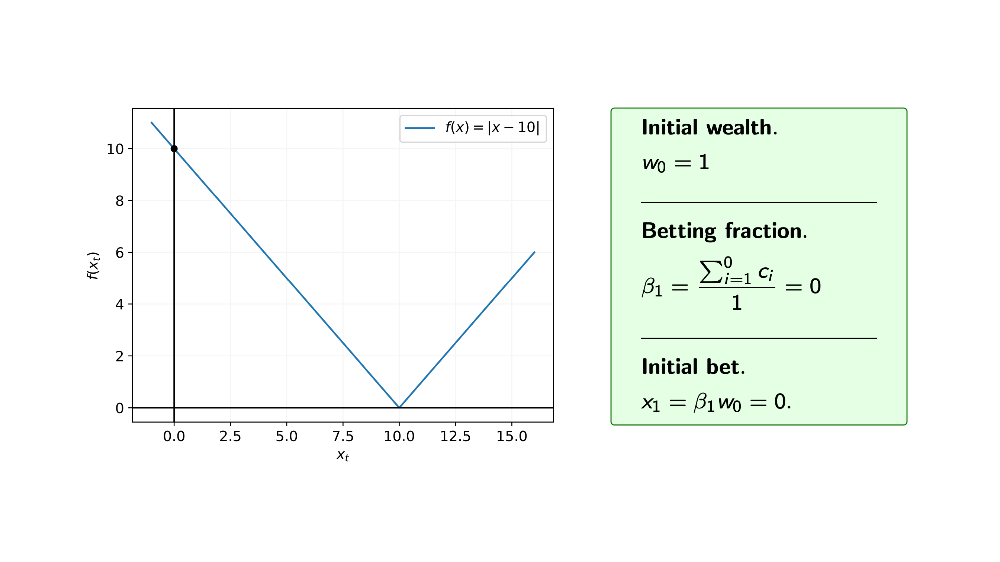
Iteration 1 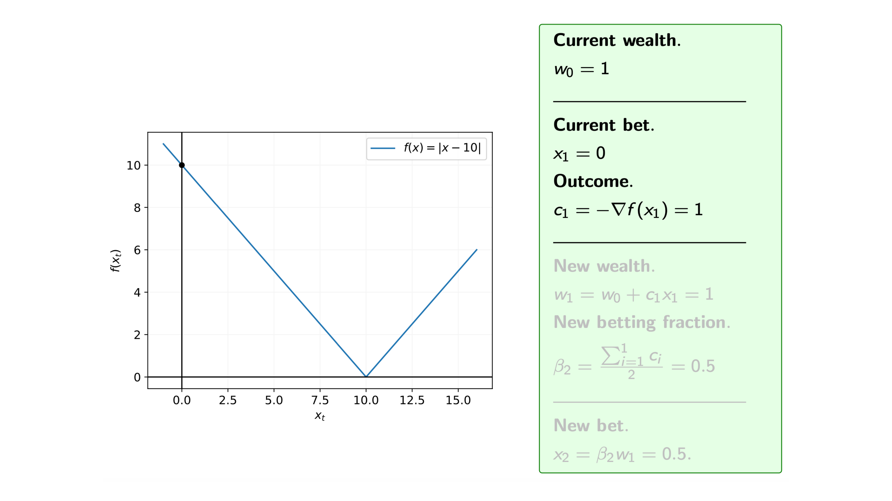
Iteration 2 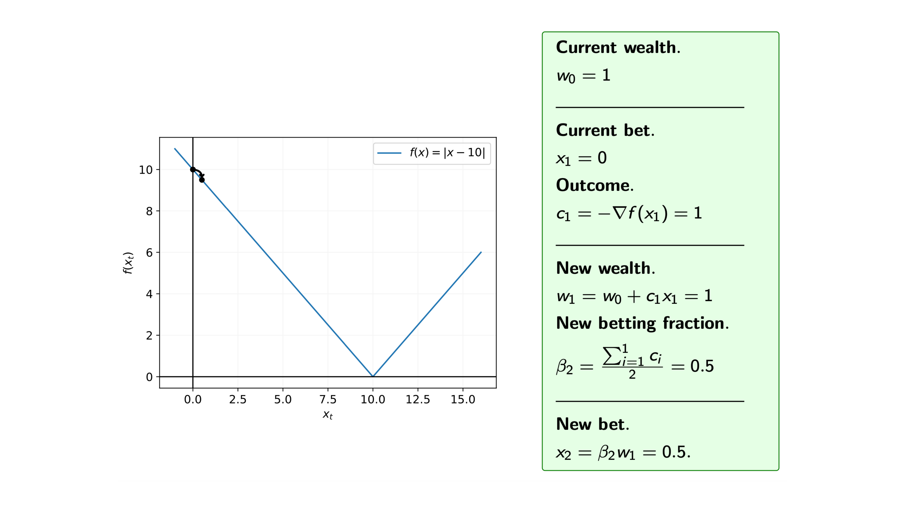
Iteration 3 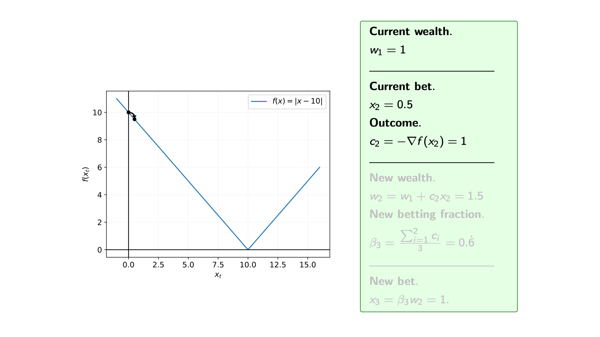
Iteration 4 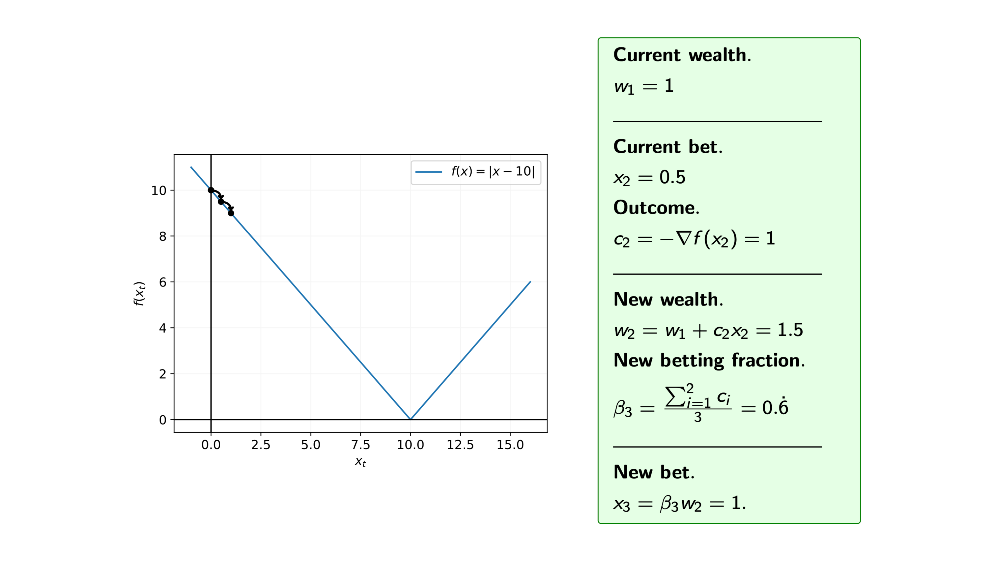
Iteration 5 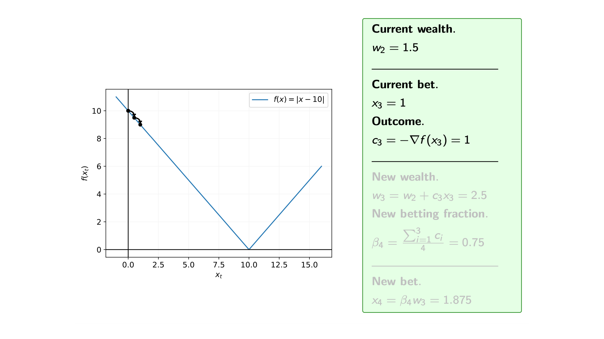
Iteration 6 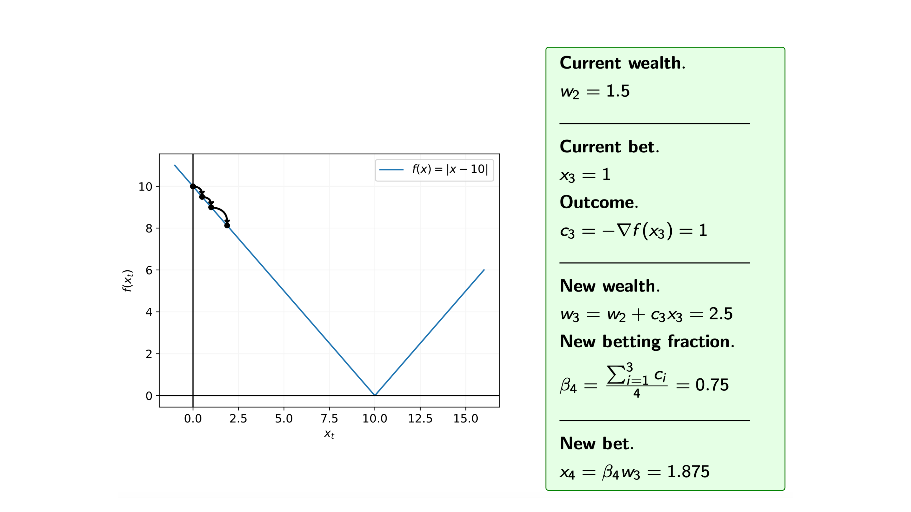
Iteration 7 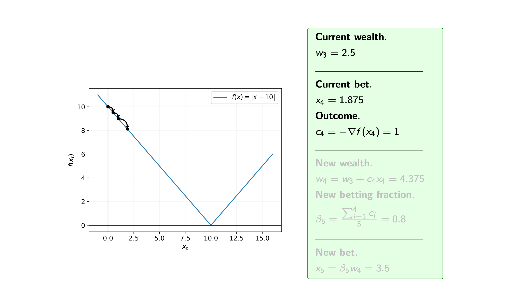
Iteration 8 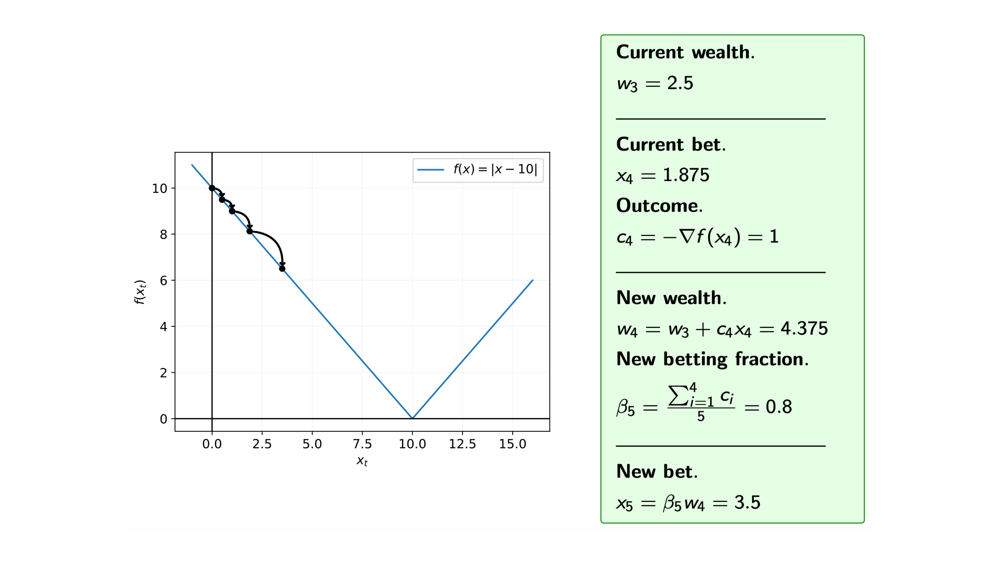
Iteration 9 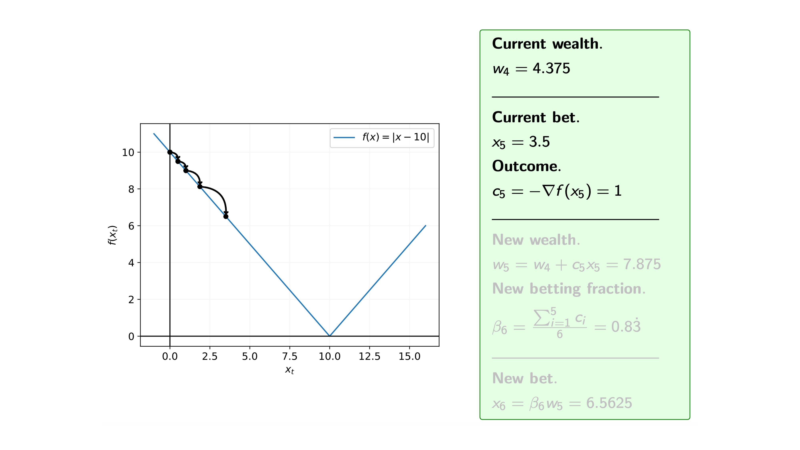
Iteration 10 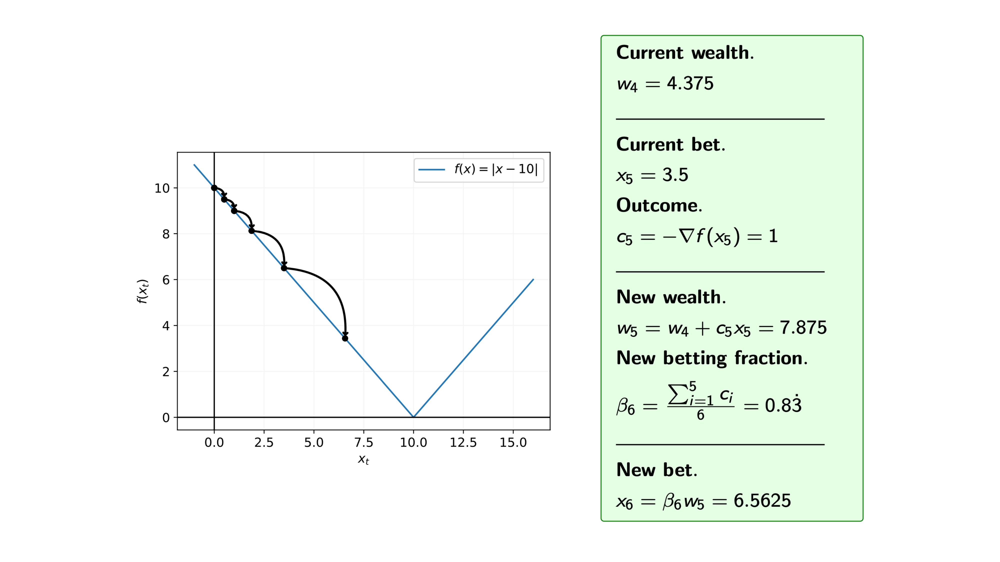
Iteration 11

Iteration 12 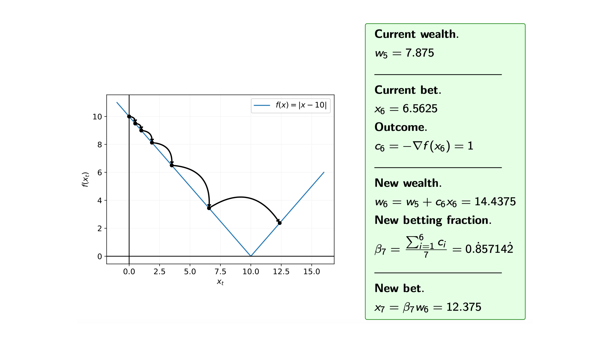
Iteration 13 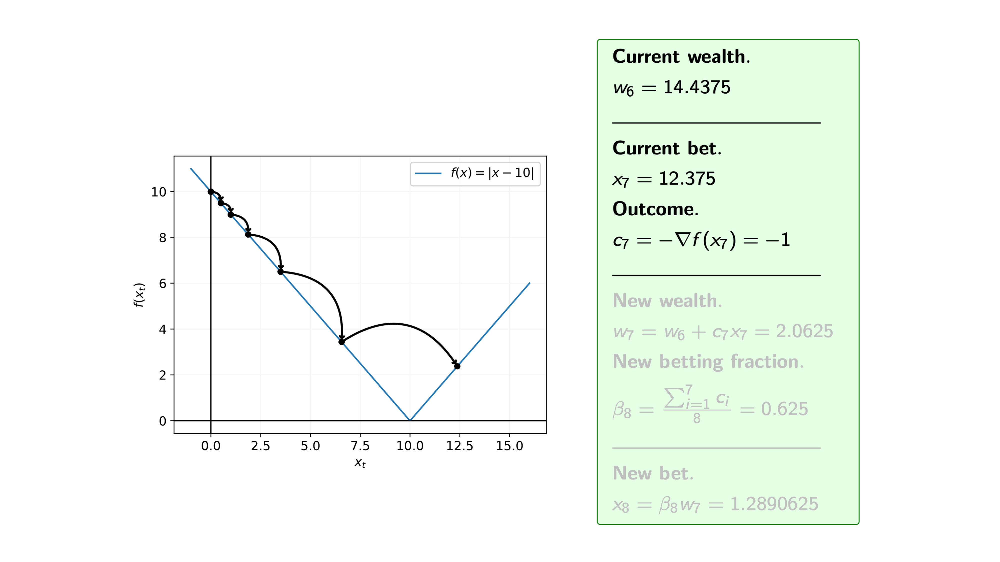
Iteration 14 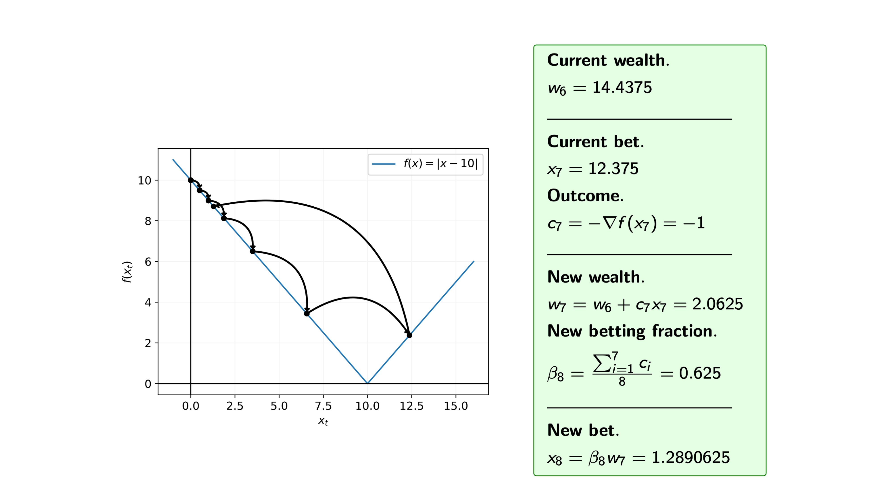
We can see from the steps of the algorithm that we may overshoot the minimum. Therefore, we are often interested in the average of the iterates. 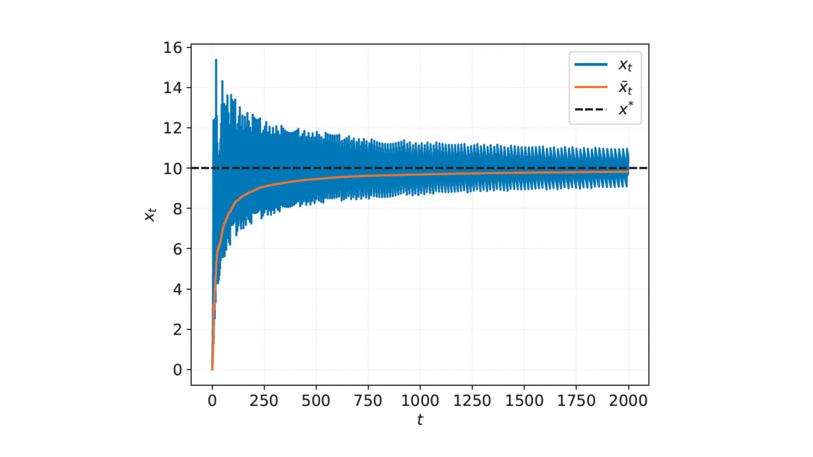
Convergence Analysis
Under suitable conditions, we can bound the error in the convergence of the coin betting algorithm after $T$ iterations, relative to the optimal solution $x^* $ .
$$ f(\bar{x}_T) - f(x^* ) \leq \frac{1}{T}\left[ | x^* | \sqrt{T \log \left(1 + \frac{24T^2 | x^* |^2}{\epsilon^2}\right)} + \epsilon\right]. $$
where $\bar{x_T} = \frac{1}{T} \sum_{t=1}^T x_t$ is the average iterate. Note that there is no free lunch here. If we knew the optimal learning rate $\gamma^* $ and used this in our gradient descent algorithm then the convergence rate would be $O(T^{-1/2}).$ However, by using a learning-rate-free approach, we know pay a $O(\sqrt{\log(T)})$ penalty in the convergence rate. Despite the additional $\sqrt{\log(T)}$ term, the argument in favour of using a learning-rate-free algorithm is that we never know the optimal learning rate $\gamma^*$ apriori, so coin betting is still a great algorithm if you don’t know a good learning rate.
Coin Sampling for Bayesian Inference: Optimization in the Wasserstein Space
Going back to Bayesian inference, the goal is to sample from a target distribution $\pi$ rather than finding the minimum of a function (as we’ve just seen in the optimization setting). So, to create a learning-rate-free Bayesian inference scheme we will need to convert the coin betting optimization algorithm to a sampling algorithm. In our ICML 2023 paper (Sharrock and Nemeth, 2023) , we extend the coin betting framework from the Euclidean space to the Wasserstein space, which is where probability measures live (and hopefully our posterior distribution lives there too :)).
Optimization in the Wasserstein Space
The coin sampling algorithm seeks to minimize the KL divergence $\text{KL}(\mu | \pi)$ between an approximate posterior distribution $\mu$ and the target distribution $\pi$. This minimization can be viewed as solving the following optimization problem in the space of probability distributions:
$$ \mu^* = \arg\min_{\mu \in \mathcal{P}_2(\mathbb{R}^d)} \text{KL}(\mu | \pi), $$
where $\mathcal{P}_2(\mathbb{R}^d)$ denotes the space of probability measures on $\mathbb{R}^d$ with finite second moments.
Assuming that the objective function $\text{KL}(\mu | \pi)$ is convex in $\mu$, then the optimization problem is to find the distribution $\mu^* $ that minimises this KL divergence. The solution $\mu^* $ corresponds to the distribution that best approximates the target distribution $\pi$ in the sense of the KL divergence.
What is a Wasserstein Gradient Flow?
A Wasserstein gradient flow is a mathematical concept used to describe the continuous evolution of a probability distribution $\mu_t$ over time $t \geq 0$, such that the distribution $\mu_t$ moves towards the minimiser of a certain functional, like the KL divergence. The “Wasserstein” aspect refers to the fact that this evolution is governed by the geometry of the Wasserstein space, a metric space of probability distributions.
In this space, the Wasserstein distance $W_2(\mu, \nu)$ between two distributions $\mu$ and $\nu$ is defined as:
$$ W_2^2(\mu, \nu) = \inf_{\gamma \in \Gamma(\mu, \nu)} \int_{\mathbb{R}^d \times \mathbb{R}^d} |x - y|^2 , \mathrm{d}\gamma(x, y), $$
where $\Gamma(\mu, \nu)$ denotes the set of all couplings (joint distributions) with marginals $\mu$ and $\nu$. The Wasserstein distance captures the “cost” of transporting mass from the distribution $\mu$ to $\nu$ and is thus sometimes referred to as the earth mover’s distance.
A Wasserstein gradient flow can then be understood as the evolution of the distribution $\mu_t$ over time, following the steepest descent direction in the Wasserstein space, to minimise a functional $\mathcal{F}(\mu)$. Note that when we were in the Euclidean setting we were trying to minimize $f(x)$.
We have a lot of flexbility in our choice of functional $\mathcal{F}(\mu),$ but for now let’s assume that our functional is the KL divergence, and therefore our gradient flow is:
$$ \frac{\mathrm{d}\mu_t}{\mathrm{d}t} = -\nabla_{W_2} \text{KL}(\mu_t | \pi), $$
where $\nabla_{W_2}$ denotes the gradient in the Wasserstein space.
This equation describes the evolution of the distribution $\mu_t$ in such a way that it continuously decreases the KL divergence with respect to the target distribution $\pi$. The distribution $\mu_t$ is thus “flowing” toward $\pi$ in the space of distributions, driven by the Wasserstein gradient.
How Does This Relate to Coin Sampling?
In the coin sampling algorithm, we have a set of $N$ particles $(x_t^{i})_{i=1}^{N}$ which give an empirical approximation to the distribution $\mu_t$. The particles are then updated in a way that simulates a discrete-time version of the continuous Wasserstein gradient flow. Assuming that our functional of interest is still the Kullback-Leibler divergence, i.e. $\mathcal{F}(\mu)=\text{KL}(\mu | \pi)$, the particles will move according to the gradient of the KL divergence, which is the log-density ratio between the approximating distribution $\mu_t$ and the target distribution $\pi$:
$$ \nabla_{W_2}\mathcal{F}(\mu) = \nabla \log \frac{\mu_t(x)}{\pi(x)}. $$
Note that in order to calculate this gradient in a practical way will require an approximation scheme (see the SVGD algorithm below).
The coin sampling algorithm incorporates this gradient flow into a betting framework, ensuring that the particles converge towards the target distribution without the need for tuning a learning rate.
Coin Sampling Algorithm
Here’s a step-by-step overview of our coin sampling algorithm, also known as Coin Wasserstein gradient descent:
1. Initial Setup:
- Begin with an initial measure $\mu_0$ and a set of $N$ initial particles distributed according to $\mu_0$.
- Assign an initial wealth $w_0$ to each particle.
2. Betting Strategy:
- For each iteration $t$, compute a bet for each particle based on its current wealth and a betting fraction $\beta_t$ (see the KT estimator in the coin betting section).
- The betting fraction $\beta_t$ is derived from the accumulated outcomes of past iterations, ensuring that the strategy adapts over time without needing a predefined learning rate, just in the same way as for coin betting.
3. Updating Particles:
- Update each particle’s position by incorporating the computed bets, i.e.
$$ x^i_{t+1} = x^i_0 - \frac{1}{t} \sum_{s=1}^{t} \nabla_{W_2}\mathcal{F}(\mu_s)(x_s^i) \left( w_0 - \sum_{s=1}^{t-1} \langle \nabla_{W_2}\mathcal{F}(\mu_s)(x_s^i), x^i_s - x^i_0 \rangle \right), $$
- The update rule does not require a learning rate, as it is inherently determined by the wealth and betting strategy. The particles $(x^i_t)_{i=1}^N$ give an empirical approximation to $\mu_t$
Practical Implementation
To implement coin sampling, we need to approximate the Wasserstein gradients $\nabla_{W_2}\mathcal{F}(\mu_t)$ and one way to do this is via an ensemble of interacting particles. The Stein Variational Gradient Descent (SVGD) algorithm is one such practical algorithm that utilises an ensemble of particles. Here’s a very brief set-up so check out Liu and Wang (2016) for a full description:
Let $\smash{k:\mathbb{R}^d\times\mathbb{R}^d\rightarrow\mathbb{R}}$ denote a positive semi-definite kernel with the associated reproducing kernel Hilbert space (RKHS), and let $P_{\mu,k}: L^2(\mu)\rightarrow L^2(\mu)$ denote the integral operator defined according to $P_{\mu,k} f(\cdot) = \int_{\mathbb{R}^d} k(x,\cdot) f(x)\mu(\mathrm{d}x)$.
Now suppose that we replace our Wasserstein gradient $\nabla_{W_2}\mathcal{F}(\mu)$ by $P_{\mu,k}\nabla_{W_2}\mathcal{F}(\mu)$ in the above algorithm. Using integration by parts, it holds that $P_{\mu,k}\nabla_{W_2}\mathcal{F}(\mu) = \mathbb{E}\left[k(x,\cdot) \nabla \log \pi(x) - \nabla_{1}k(x,\cdot)\right]$. Thus, in particular for a set of particles $(x_t^i)_{i=1}^N$, we have
$$ P_{\mu_t^N,k}\nabla_{W_2}\mathcal{F}(\mu_t^N)(x_t^{i}) = \tfrac{1}{N}\textstyle\sum_{j=1}^N[k(x_t^{j},x_t^{i}) \nabla \log\pi(x_t^{j}) - \nabla_{1}k(x_t^{j},x_t^{i})]. $$
Plugging this gradient into our coin sampling scheme leads us to a learning-rate free analogue of SVGD. We note this algorithm is not entirely tuning free, since it requires a choice of bandwidth for the kernel. In practice, however, this parameter can be easily tuned automatically using the median rule.
The gifs that keep on giffing
Here are a number of simulations on 2-dimensional targets which compared the coin sampling against SVGD, where we do a “Goldilocks thing” on SVGD and consider some learning rates that are too small, too large and one that is hand-tuned to be just right.
Doughnut distribution 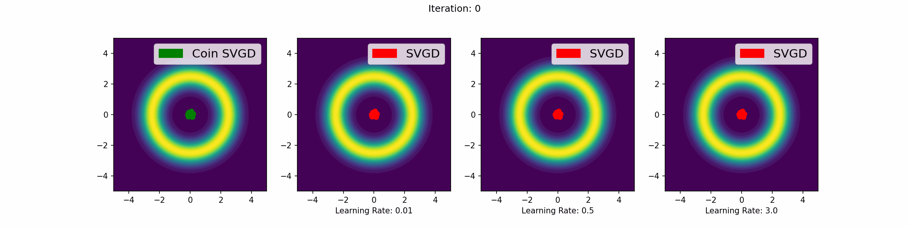
Neal’s funnel distribution 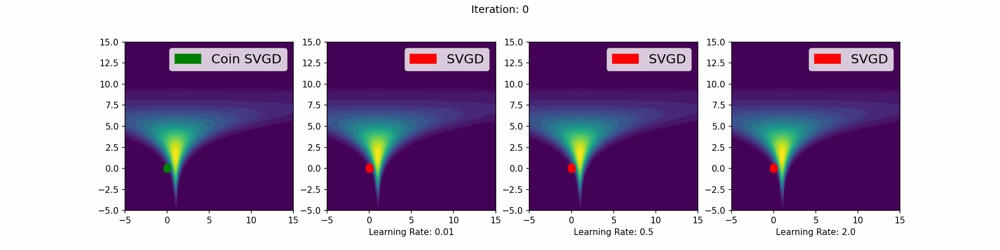
Gaussian distribution 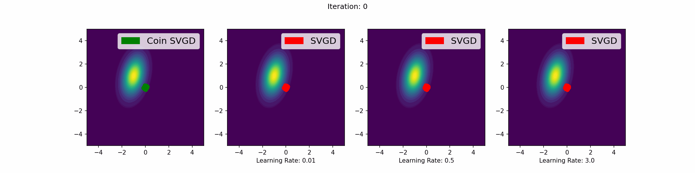
Mixture of two Gaussians 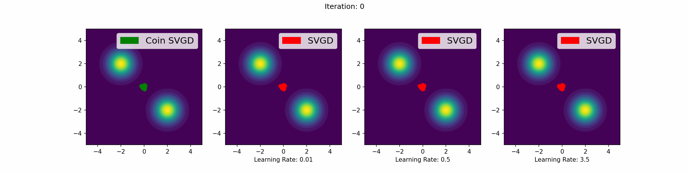
Extensions and Recent Advances of Coin Sampling
Learning-rate-free sampling on constrained spaces
We can extend the coin sampling framework to constrained parameter sapces by using a mirror map. Let $\mathcal{X}$ be a closed, convex domain in $\mathbb{R}^d$. Let $\phi:\mathcal{X}\rightarrow\mathbb{R}\cup{\infty}$ be a proper, lower semicontinuous, strongly convex function of Legendre type. This implies, in particular, that $\nabla \phi(\mathcal{X}) = \mathbb{R}^d$ and $\nabla \phi: \mathcal{X}\rightarrow\mathbb{R}^d$ is bijective. Moreover, its inverse $(\nabla \phi)^{-1}:\mathbb{R}^d\rightarrow\mathcal{X}$ satisfies $(\nabla\phi)^{-1}= \nabla \phi^* $, where $\phi^* :\mathbb{R}^d\rightarrow\mathbb{R}$ denotes the Fenchel conjugate of $\phi$, defined as $\phi^{*}(y) = \sup_{x\in\mathcal{X}} \langle x, y \rangle - \phi(x)$. We will refer to $\nabla\phi:\mathcal{X}\rightarrow\mathbb{R}^d$ as the mirror map and $\nabla \phi(\mathcal{X}) = \mathbb{R}^d$ as the dual space.
Using the mirror map $\nabla \phi:\mathcal{X}\rightarrow\mathbb{R}^d$, we can now reformulate the constrained sampling problem as the solution of a “mirrored” version of the optimisation problem. Let us define $\nu = (\nabla \phi) \pi$ and $\pi = (\nabla \phi^* ) \nu$ (NOTE: technically there should be a ‘#’ subscript to indicate the pushforward measure but we’ve dropped it here because of issues with the HTML). We can then view the target $\pi$ as the solution of $$ \pi = (\nabla \phi^* ) \nu,~~~ \nu = \argmin_{\eta\in\mathcal{P}_2(\mathbb{R}^d)}\mathcal{F}(\eta), $$ where now $\smash{\mathcal{F}:\mathcal{P}_2(\mathbb{R}^d)\rightarrow(-\infty,\infty]}$ is a functional uniquely minimised by $\smash{\nu = (\nabla \phi) \pi}$. We have already seen that a natural choice of this functional would be $\mathcal{F}(\eta) = \mathrm{KL}(\eta|\nu)$. This satisfies the useful property that, if $\eta = (\nabla \phi) \mu$ and $\nu = (\nabla \phi) \pi$, then $\mathrm{KL}(\eta|\nu) = \mathrm{KL}(\mu |\pi)$, Hseieh 2018, Theorem 2 .
Returing to Coin Sampling, we can now apply the same iterative scheme introduced earlier, but where now our coin bets are $c_t= -\nabla_{W_2}\mathcal{F}(\eta_t)$. For more details on learning-rate-free sampling in constrained spaces, check out the NeurIPS 2023 paper Sharrock et al. 2023 .
Learning-rate-free marginal maximum likelihood training for latent variable models
In statistics and machine learning, probabilistic latent variable models $p_x(z,y)$ comprise of parameters $\smash{x \in \mathcal{X} \subseteq \mathbb{R}^{d_x}}$, unobserved latent variables $\smash{z \in \mathcal{Z} \subseteq \mathbb{R}^{d_z}}$, and observations (i.e. data) $y \in \mathcal{Y} \subseteq \mathbb{R}^{d_y}$. These models are used to capture the hidden structure of complex data such as images, audio, text, and graphs.
A challenge faced by these models is to estimate the parameters by maximizing the marginal likelihood of the observed data, $$ x^* = \argmax_{x \in \mathcal{X}} p_{x}(y):= \argmax_{x \in \mathcal{X}} \int_{\mathcal{Z}}p_{x}(z,y)\mathrm{d}z, $$ and quantifying the uncertainty in the latent variables through the corresponding posterior $\smash{p_{x^* }(z|y) = {p_{x^* }(z,y)}/{p_{x^* }(y)}}$.
A classical approach for solving the marginal maximum likelihood estimation (MMLE) problem is via the Expectation Maximization (EM) algorithm (Dempster 1977) . This iterative method consists of two steps: an expectation step (E-step) and a maximization step (M-step). In the $t^{\text{th}}$ iteration of the EM algorithm, the E-step involves computing the expectation of the log-likelihood with respect to the current posterior distribution $\mu_{t} := p_{x_t}(\cdot|y)$ of the latent variables, viz, $$ Q_{t}(x) = \int_{\mathcal{Z}} \log \pi_{x}(z) \mu_{t}(z) \mathrm{d}z, \tag{E} $$ where $\pi_{x}(z):= p_{x}(z,y)$ denotes the joint density of $z$ and $y$, given fixed $y\in\mathbb{R}^{d_y}$. Meanwhile, the M-step involves optimizing this quantity with respect to the parameters, namely $$ x_{t+1} := \argmax_{x \in \mathcal{X}} Q_t(x). $$ Under fairly general conditions, this procedure guarantees convergence of the parameters $x_t$ to a stationary point $x^* $ of the marginal likelihood, and convergence of the corresponding posterior approximations $p_{x_t}(\cdot | y)$ to $p_{x^* }(\cdot|y)$
An alternative perspective of the EM algorithm was given by Neal and Hinton (1998) . They noticed that the problem of marginal maximum likelihood estimation could be recast as minimization of the free-energy functional $\mathcal{F}:\mathcal{X}\times \mathcal{P}(\mathcal{Z})\rightarrow \mathbb{R}$, defined according to $$ \mathcal{F}(x,\mu) := \int \log \frac{\mu(z)}{\pi_{x}(z)} \mu(z)\mathrm{d}z. $$
Taking a free-energy funcitonal perspective of the marginal maximum likelihood estimation problem, now means that we want to solve the joint minimization problem $$ (x^* , \mu^* ) = \argmin_{(x,\mu) \in \mathcal{X} \times \mathcal{P}_2(\mathcal{Z})} \mathcal{F}(x,\mu). $$
In particular, the EM algorithm corresponds precisely to a coordinate descent scheme applied to $\mathcal{F}$: given an initial $x_0\in\mathcal{X}$, solve $$ \mu_{t} := \argmin_{ \mu \in \mathcal{P}_2 (\mathcal{Z}) } \mathcal{F} (x_t, \mu ), $$
$$ x_{t+1} := \argmin_{ x \in \mathcal{X} } \mathcal{F} (x , \mu_{t} ), $$
until convergence. As we’ve seen already, we can cast this problem of optimization of functionals as a gradient flow problem with respect to its parameters. An interesting learning-rate-free version of the EM algorithm then follows by combining the coin betting algorithm for estimating $x^* $ with the coin sampling algorithm for estimating $\mu^* $. Check out the AISTATS 2024 paper for full details Sharrock et al. 2024
Conclusion
The coin sampling algorithm (aka Coin Wasserstein gradient descent algorithm) is an interesting (and possibly the first) learning-rate-free gradient-based Bayesian inference scheme. In the Coin Sampling paper we show that this is a robust and scalable solution that eliminates the need for learning rate tuning. In fact, it pretty much always just worked out-of-the-box for the examples that we considered. Recent work has also shown that these ideas are quite well-suited to other settings, such as latent variable models and sampling in constrained spaces. Hopefully, this work will lead others to develop more efficient and user-friendly (i.e. learning rate free) implementations of Bayesian methods for new scientific applications.
For more details on the theoretical underpinnings and empirical performance of coin sampling, you can access the full paper here . The code is also available on Github